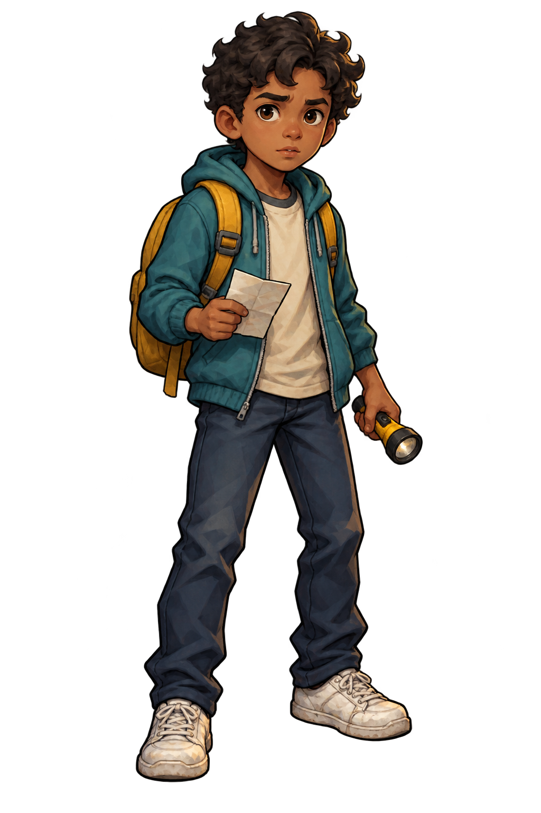

Your class is somewhere in the dark.Remember the turns. Find your room.When the bell rings, he comes looking.
WASD / arrows to move · E to open doorsTouch controls available

No map. Just your memory.
Dark halls. Echoing footsteps.Find your class before the final bell.
This is a first-person maze. Walk down hallways, turn corners, and read classroom signs. Every new assignment generates a fresh map. No map: memorize the paths. Door signs show their room number and subject.
Controls: W / ↑ forward, S / ↓ backward, A D / ← → turn. Drag the view to look around. Face a nearby door and press E or Open door. On touch screens hold the movement buttons. Use Sound on for footsteps, a low building hum, distant creaks, and a heartbeat as the hall monitor approaches or time runs low. Full screen expands the view; Esc exits.
Time: Easy 3 minutes, Normal 2, Hard 1. Reach the assigned room to win. When time runs out, the principal leaves the Office and chases you faster than you can move. Reach your assigned class to win; getting caught means expulsion.
Notebook: walk into one to pick it up automatically and change the maze. All rooms remain reachable, but their locations and the pathways change.
Flashlight: walk into one to collect it automatically, then use it to reveal the next stretch of hallway for 2.5 seconds before it dies.
Office: you are never assigned to the Office. It is where the principal starts his chase.
Other students: students wander the halls. You can walk past them without a penalty. Only the hall monitor gives detention.
Hall monitor: crossing paths means 15 seconds of detention. The timers keep running. When detention ends, the hall monitor moves to a different part of the school.
Bathroom: the need can happen randomly at any point, or not at all. A warning gives you 30 seconds and slows you down. Open a restroom door to recover, or your assigned class to win. An accident ends your run. The guide does not pause the timer.